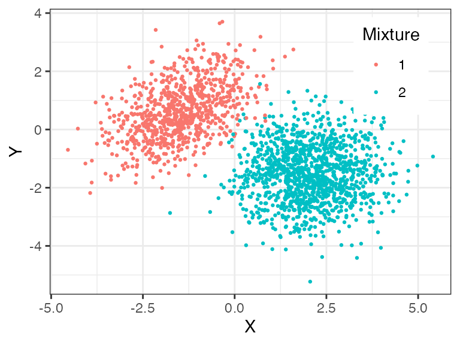
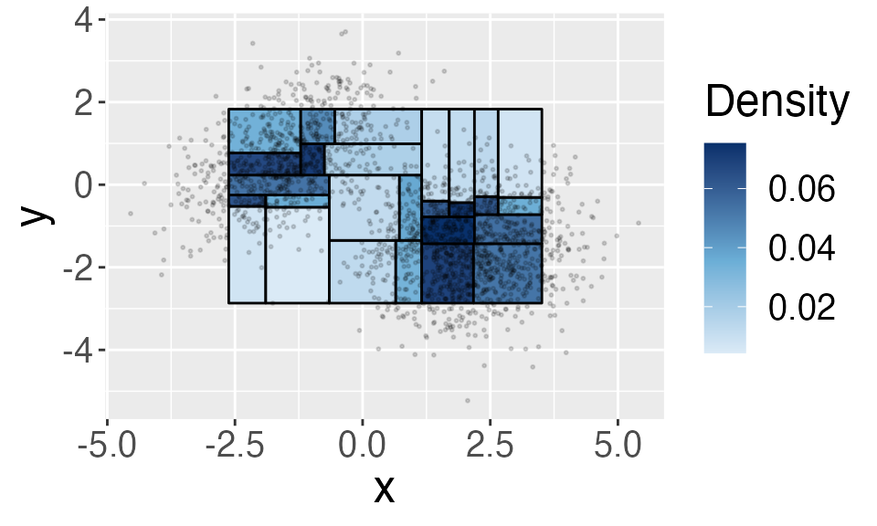
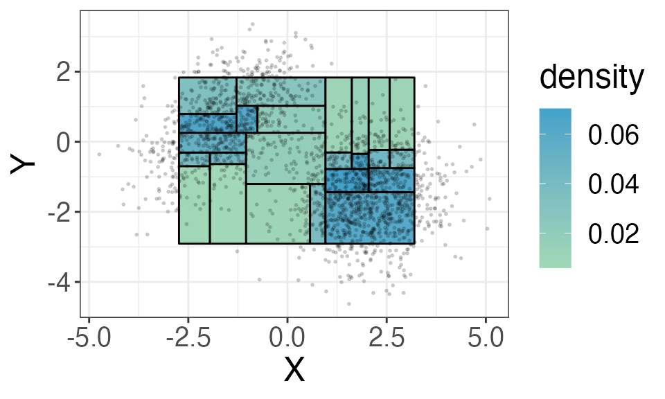

beta_trees.RmdFirst introduced by Pearson in 1895, a histogram is one of the basic tools to summarize data. A histogram is created by defining a set of rectangular “bins”, and then count the number of observations within each bin. Below is an example of a one-dimensional histogram, where we specify 15 bins in total. We can do the same in two- or higher- dimensions. However, as the dimension increases, creating a histogram becomes challenging because of what we call the curse of dimensionality. In essense, if we include the same number of bins in each didimension, then the number of bins we need to fill the whole space increase exponentially as the number of dimension increases, and yet most of these bins will be empty!
The Beta trees histogram circumvents the “curse of dimensionality” by adapting the histogram to where the data locates. Instead of predefining locations of bines, Beta trees histogram iteratively partitions the space according to the order statistics. The Beta trees histogram has three properties
Adapts to where observations are located
Provides a simultaneous confidence interval of the probability mass in each regions of the histogram
Summarizes data succinctly by choosing the largest bins such that data are relatively uniformly distributed inside the region.
The confidence intervals (CI) created by the Beta Trees histogram also allows us to identify modes in the underlying density, which we describe in another document “Identifying modes using a Beta Trees histogram”.
This document demonstrates how to use functions in the package to create a Beta-Trees histogram through an example of a mixture of 2-dimensional Gaussian distribution.
As an illustration, we create a Beta Tree histogram for a mixture of two-dimensional Gaussian data.
n <- 2000 # num of obs.
d <- 2 # num of dim.The two-dimensional Gaussian are from the distribution below, and we visualize the the samples of 2000 observations below.
\[ \frac{2}{5} \mathcal{N}\left(\left(\begin{matrix}-1.5 \\0.6\end{matrix}\right),\left(\begin{matrix}1 & 0.5 \\ 0.5 & 1\end{matrix}\right) \right) + \frac{3}{5} \mathcal{N}\left(\left(\begin{matrix}2 \\-1.5\end{matrix}\right),\left(\begin{matrix}1 & 0 \\ 0 & 1\end{matrix}\right) \right), \]

BuildHist() function creates a Beta Tree histogram.
Here, we specify a confidence level alpha = 0.1 and use
weighted bonferroni method for multiple testing correction. This implies
the following: the confidence interval satisfies that it is
simulatneously valid at confidence level alpha = 0.1.
hist <- BuildHist(X, alpha = 0.1, method = "weighted_bonferroni")The hist is a matrix describing each region in the
beta-tree histogram. Each row represents one region, and this histogram
includes 24 regions. Let’s look at the first region in the
histogram:
hist[1,]
#> [1] -2.56613342 -0.68129093 -1.40232246 -0.35586994 0.04224662 0.02154253
#> [7] 0.07173925 31.00000000 7.00000000and the columns provides the following information:
the first two columns are the lower bounds in \(x\) and \(y\)-coordinates of each region; the next two columns are the upper bounds in \(x\) and \(y\)-coordinates of each region, i.e., this rectangle is defined by the bounds [ -2.57 -1.4 ] *[ -0.68 -0.36 ].
the fifth column stores the empirical density \(h(R)\) in this region
the sixth and seventh columns store the lower and upper confidence bound (CI) of the average probability density in the region. With probability at least \((1-\alpha)\), the CI covers all the average density in all of the regions.
the eighth column stores the number of observations \(n(R)\) in this region
the last column stores the depth of the region in the k-d tree, which we will describe in the next section.
You can set two more parameters in the function: plot
and bounded . If plot = T, then the function
outputs a visualization Beta-trees histogram if the data is
two-dimensional.
hist <- BuildHist(X, alpha = 0.1, method = "weighted_bonferroni", plot = TRUE)
As we will explain in the next few sections, the histogram only
includes bounded regions. If you select
bounded = T, then you can specify how to initialize a
rectangular bounded region. You will need to provide two additional
inputs option and ndat which we will explain
in the next section. In the example below, we ask to intialize the
region by choosing the 0.05 and 0.95 quantiles in each dimension.
hist <- BuildHist(X, alpha = 0.1, method = "weighted_bonferroni", bounded = T,
option = "qt", q=c(0.05,0.05),
plot = TRUE)
In the next section, we will describe how the KD tree is constructed.
We create a Beta Tree Histogram in four steps:
A k-d tree is a spatial-partitioning data structure for organizing observations in a k-dimensional space. Motivated by the k-d tree, Beta trees histogram starts by iteratively partitioning the sample space at the sample median. In detail, we start with all of the observations (this is our root node). At each step, we choose (1) an axis along which to partition (2) a location for partitioning. For (1), we iterate through all of the coordinates, i.e., the first partition is along \(x\)-axis and the second partition is along the \(y\)-axis etc. For (2), we partition along the sample median in the partitioning coordinate.
In the two-dimensional example above, in the first partition, we split the sample space into two half-spaces: \[ R_1 = \{x\in\mathbb{R}^2:x_1<X_{1,\left(\lceil{n/2}\rceil\right)} \}, \quad R_2 = \{x\in\mathbb{R}^2:x_1>X_{1,\left(\lceil{n/2}\rceil\right)} \} \] Note here that the obs. at the sample median is not included in the two regions. In the second step, we split \(R_1\) and \(R_2\) repsectively. \(R_1\) is splitted into two children \[ R_1 = \{x\in R_1:x_2<X^1_{2,\left(\lceil{n_1/2}\rceil\right)}, X^1\in R_1 \}, \quad R_2 = \{x\in R_1:x_2>X^1_{2,\left(\lceil{n_1/2}\rceil\right)}, X^1\in R_1 \}, \] where \(X^1\) are all of the observations in \(R_1\). We continue splitting a region until the number of observations inside is less than \(4\log n\), where \(n\) is the total num of obs.
The function BuildKDTree constructs a k-d tree.
tree <- BuildKDTree(X, bounded = F)The tree object has two components kdtree
and nd. kdtree stores the k-d tree. You can
refer to the function documentation for the details, here we point out
that leftchild and rightchild points to the
two partitions of that node. For example, we can look at one node in the
tree.
tree$kdtree$leftchild$leftchild$rightchild$rightchild$leftchild$leftchild
#> $leftchild
#> NULL
#>
#> $rightchild
#> NULL
#>
#> $ndat
#> [1] 30
#>
#> $depth
#> [1] 7
#>
#> $low
#> [1] -1.4023225 -0.9135046
#>
#> $up
#> [1] -0.5857733 -0.1549037
#>
#> $lower
#> NULL
#>
#> $upper
#> NULL
#>
#> $bounded
#> [1] 1
#>
#> $leaf
#> [1] TRUEnd contains the number of bounded regions at
each depth. This is useful when we adjust the confidence levels at each
depth to account for multiple CI. Here, at depth 5 there are 4 bounded
regions.
tree$nd
#> [1] NA NA NA NA 4 12 36 21As you can see, there are no bounded regions in the first 4 levels.
Because the histogram only includes bounded regions, many obs. not be
inlcuded in the final histogram. Alternatively, you can specify an
option bounded = T in the BuildKDTree
function. In that case, the function constructs the first two partitions
to initialize a bounded region. Here we provide two options to specify
the bounded region: (1) if option = 'qt', then we partition
at the sample quantiles. For example, if q = c(0.05, 0.05),
then the first partition defines a region \(R_0\)
\[
R_0 = \{x\in\mathbb{R}^2:X_{1,\left(\lceil{0.05 *
n}\rceil\right)}<x_1<X_{1,\left(n - \lceil{0.05 * n}\rceil\right)}
\},
\] and the second partition defines a region \(R_1\), which we set as the root node. The
histogram above is created using
\[ R_1 = \{x\in R_0:X^0_{2,\left(\lceil{0.05 * n_0}\rceil\right)}<x_2<X^0_{2,\left(n_0 - \lceil{0.05 * n_0}\rceil\right)}, X^0\in R_0 \} \]
option = 'ndat', then we partition at the sample
order statistics. For example, if q = c(25, 25), then the
partitions are at the order statistics 25 and \((n-25)\) etc.Theorem 1 in the paper states that the cumulative distributio function in each region \(k\) satisfies \[ F(R_k)\sim \mathrm{Beta}(n_k+1, n-n_k), \] and we can use this result to construct a \((1-\alpha)\) confidence interval for the average density \(f(R_k) = F(R_k)/|R_k|\) where \(|R_k|\) is the volume of \(R_k\).
This confidence interval is valid for only one region, and if we want to achieve simultaneous coverage at level \((1-\alpha)\), we can adjust the confidence level of each region such that the total probability of mis-coverage is at most \(\alpha\). Here, we use a weighted bonferroni adjustment, which defines the confidence level for regions at level \(D\) as \[ \hat{\alpha}_D = \frac{\alpha}{(D_{\max} - D + 2) \times N_D \times \sum_{B=2}^{D_{\max}-2}\frac{1}{B}}. \] Here, \(D_{\max}\) is the maximum depth of the k-d tree, \(N_D\) is the number of bounded regions in depth \(D\) and the factor \(\sum_{B=2}^{D_{\max}-2}\frac{1}{B}\) ensures that \(\hat{\alpha}_D\) adds up to \(\alpha\).
ConfLevel computes \(\hat{\alpha}_D\) at each level. For
example, the following code computes \(\hat{\alpha}_D\) when \(\alpha = 0.1\). You can also use bonferroni
adjustment by setting method = 'bonferroni'. The Bonferroni
adjustment gives equal weight to every depth.
ahat <- ConfLevel(tree$nd, alpha = 0.01, method = "weighted_bonferroni")
ahat
#> [1] 5.000000e-01 5.000000e-01 5.000000e-01 5.000000e-01 3.896104e-04
#> [6] 1.623377e-04 7.215007e-05 1.855288e-04, defined by \((n(R)+1)/ n / |R|\), where \(n(R)\) is the total num of obs. inside the region, \(n\) is the total num of obs. and \(|R|\) is the volume of the rectangle.
Once we set the confidence levels, we can compute a simultaneous confidence interval for the average density \(f(R_k)\) at level \(\alpha\) as
\[ \left(\frac{\mathrm{qBeta}(\hat{\alpha}_D, n_k + 1, n-n_k)}{|R_k|}, \frac{\mathrm{qBeta}(1 - \hat{\alpha}_D, n_k + 1, n-n_k)}{|R_k|}\right). \]
To form the Beta Tree histogram, we will select regions whose
empirical density \(h_k = (n_k + 1)/n\)
falls within the CI of all of its children. To simplify computation, we
set the lower and upper confidence bound in each node in the k-d tree
tree (in the lower and upper ) as
\[
\mathrm{lower}(R_k) = \max\left(\frac{\mathrm{qBeta}(\hat{\alpha}_D, n_k
+ 1, n-n_k)}{|R_k|}, \mathrm{lower}(1st \mathrm{child}),
\mathrm{lower}(2nd \mathrm{child})\right)\\
\mathrm{upper}(R_k) = \max\left(\frac{\mathrm{qBeta}(1-\hat{\alpha}_D,
n_k + 1, n-n_k)}{|R_k|}, \mathrm{upper}(1st \mathrm{child}),
\mathrm{upper}(2nd \mathrm{child})\right)
\]
SetBounds sets these two bounds. Compare the same node
in the k-d tree as before – the lower and
upper levels has been set.
tree <- SetBounds(tree$kdtree, ahat, n)
tree$leftchild$leftchild$rightchild$rightchild$leftchild$leftchild
#> $leftchild
#> NULL
#>
#> $rightchild
#> NULL
#>
#> $ndat
#> [1] 30
#>
#> $depth
#> [1] 7
#>
#> $low
#> [1] -1.4023225 -0.9135046
#>
#> $up
#> [1] -0.5857733 -0.1549037
#>
#> $lower
#> [1] 0.01103009
#>
#> $upper
#> [1] 0.04661584
#>
#> $bounded
#> [1] 1
#>
#> $leaf
#> [1] TRUESelectNodes selects the largest regions (w.r.t)
inclusion such that the empirical density \(h_k\) falls inside the interval \([\mathrm{lower}(R_k),
\mathrm{upper}(R_k)]\).
B <- matrix(nrow = 0, ncol = (2*d + 5))
hist <- SelectNodes(tree, B, ahat, n)Each row in hist matrix represents one region in the
Beta Tree histogram. The matrix contains \(2\times d + 5\) columns. The first \(2\times d\) columns stores the lower (first
\(d\) columns) and upper bounds of the
region. The \((2d+1)\) column stores
the empirical density \(h_k\) and the
next two columns store the confidence interval of \(f(R_k)\) as defined in the previous
section: \[
\left(\frac{\mathrm{qBeta}(\hat{\alpha}_D, n_k + 1, n-n_k)}{|R_k|},
\frac{\mathrm{qBeta}(1 - \hat{\alpha}_D, n_k + 1, n-n_k)}{|R_k|}\right).
\]